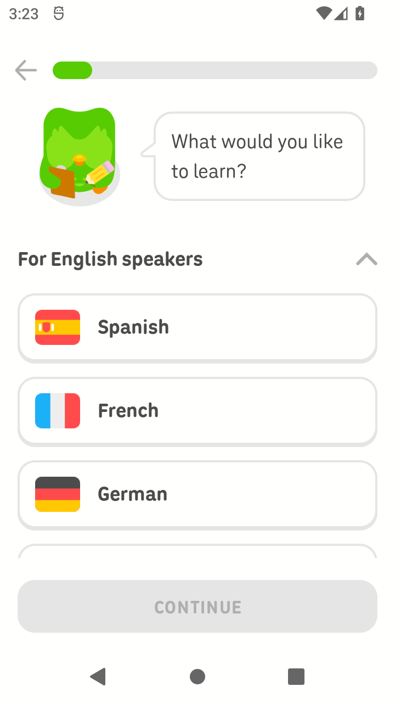
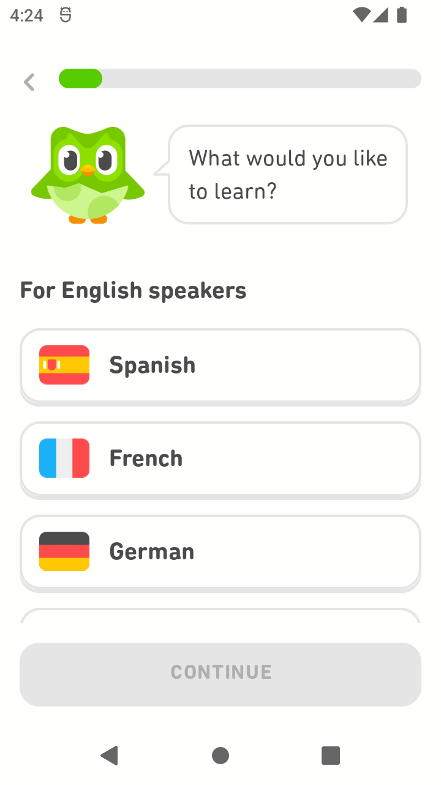
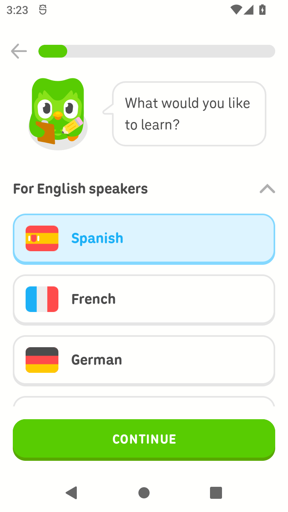
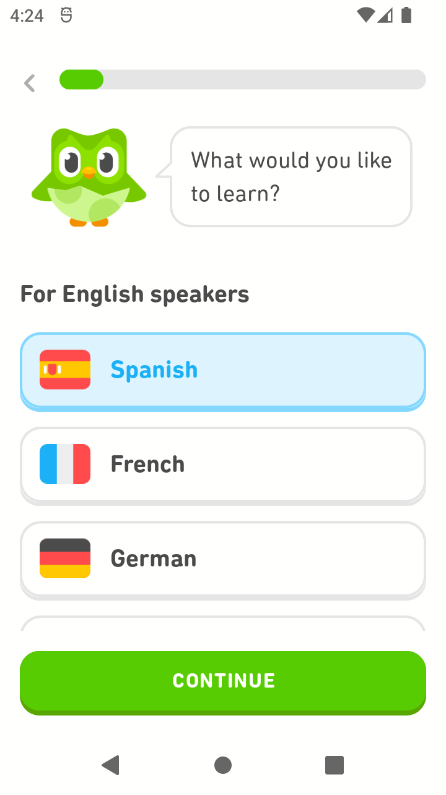
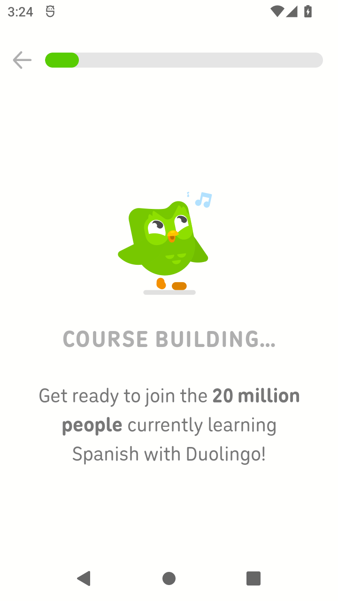
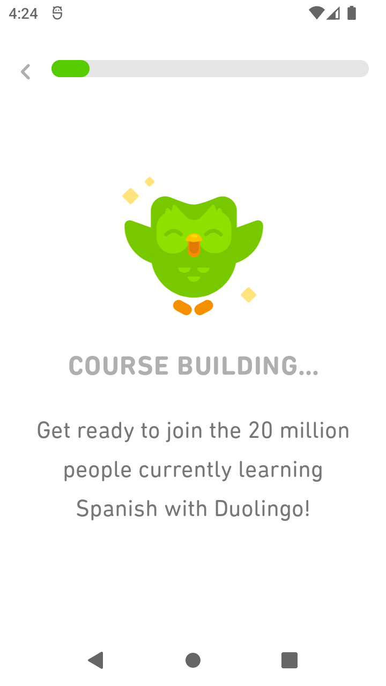
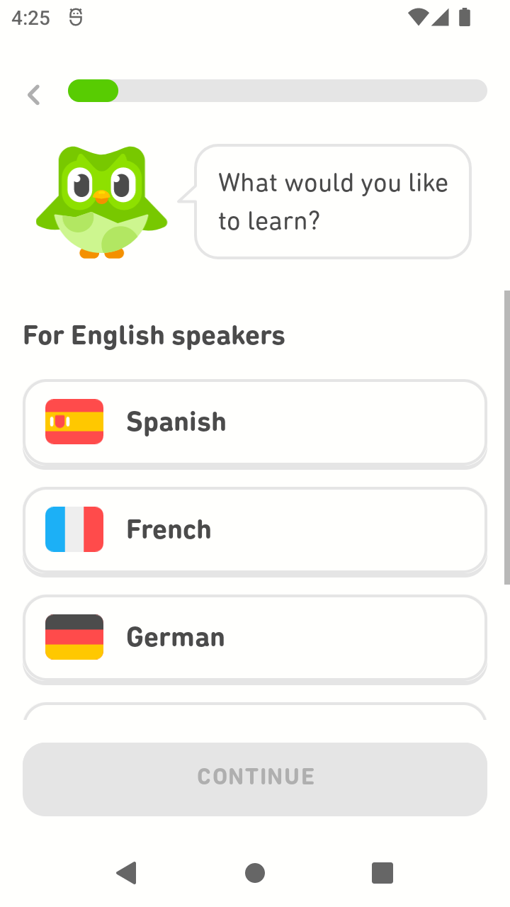

1 · 课程未选
com.duolingo 6.80.6-china · historical A


org.reastyle.nativeexample 1.0 · current A-of-D


双方 Continue 均禁用。参考缺少母语标题右侧箭头；角色、Back 图形和气泡主体不同；课程卡 bounds 向下偏 1px。来源禁用按钮可见面从 y=1056 起，参考从 y=1048 起。
左侧为 2026-10-15 采集的来源 historical A，右侧为 2026-10-16 采集的独立参考 current A-of-D。每张图直接引用原 PNG，点击可查看原尺寸；没有修改原图。完整差异与边界 · 坐标、状态、色值与哈希 · 原生实现说明
同为 Android 12 API31、720×1280、320 dpi、英文浅色。来源 fontScale=null／未知，参考为 1.0。相同位置与部分相同颜色只支持局部比较；静态角色、字体外观、缺少母语入口和构建排版仍有差异。r01 错页排除。


双方 Continue 均禁用。参考缺少母语标题右侧箭头；角色、Back 图形和气泡主体不同；课程卡 bounds 向下偏 1px。来源禁用按钮可见面从 y=1056 起，参考从 y=1048 起。


选中面 #ddf4ff、边 #84d8ff 和启用按钮 #58cc02／#58a700 在所列采样点吻合。参考课程文字更宽，卡片下边厚度不同，无障碍节点语义也不同。


参考标题和正文顶部向上偏 40px；当前正文均三行且断行吻合，但行距、字宽与局部加粗不同。角色姿态、装饰、尺度及动态行为没有还原。此状态没有验证真实课程构建成功。

局部返回清空规则得到运行支持。参考此帧右侧可见滚动条，来源原图没有。未验证请求取消、晚到结果、其他草稿或完整流程。
八张原图及其 UI 树、采集时刻、PNG SHA-256 可从 source-pairs.json 定位。本页没有相似度百分比，不代表十组件与跨业务样本均已验证。